Actual __ironVow.attack commands and rules; deterministic 30 Hz. Only unrecorded GPU draws/readbacks omitted, with scene/camera matrix updates. Each saved frame restores native GPU render/readback at deviceScaleFactor=1 with QA-only preserveDrawingBuffer. Software WebGL correctness evidence; no native iPad performance claim.
Source 6786df4d7736418289bc1b0cf21d23fac9ba350f
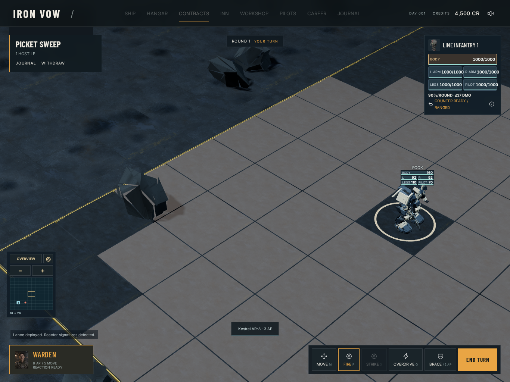
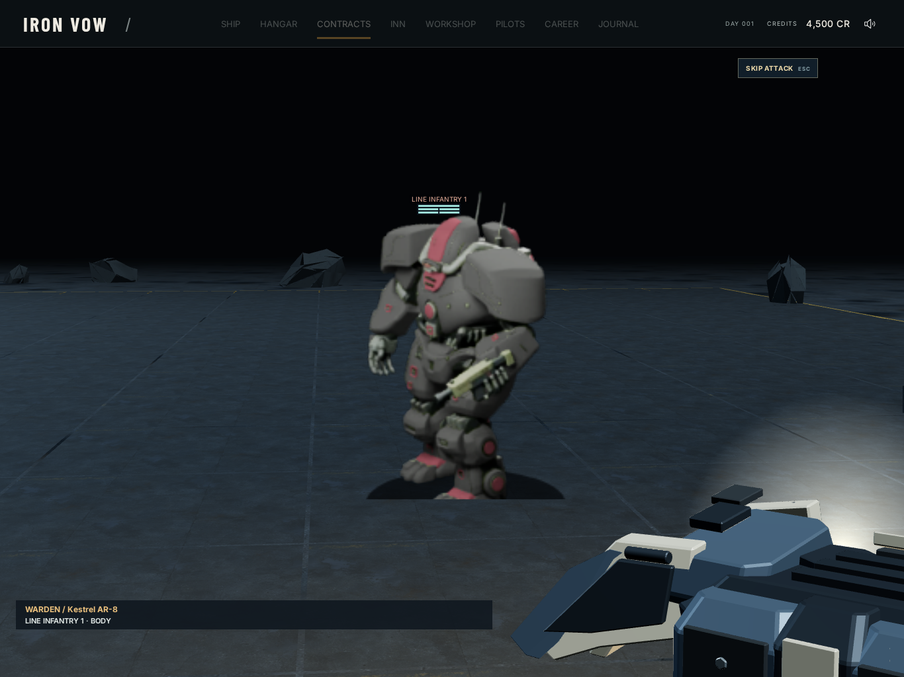
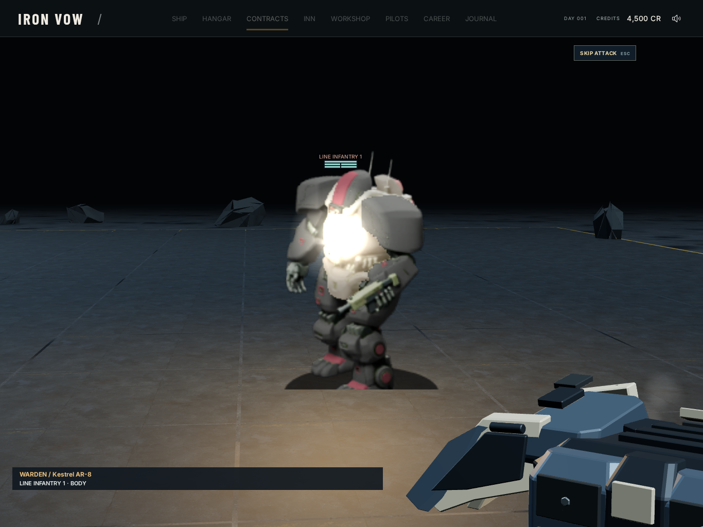
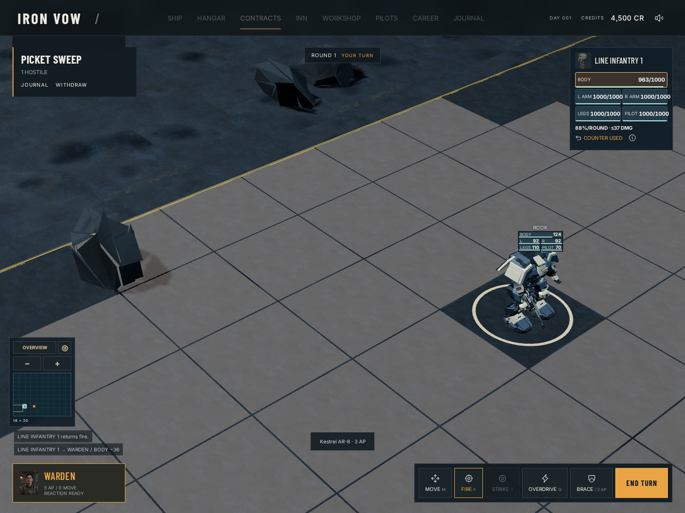
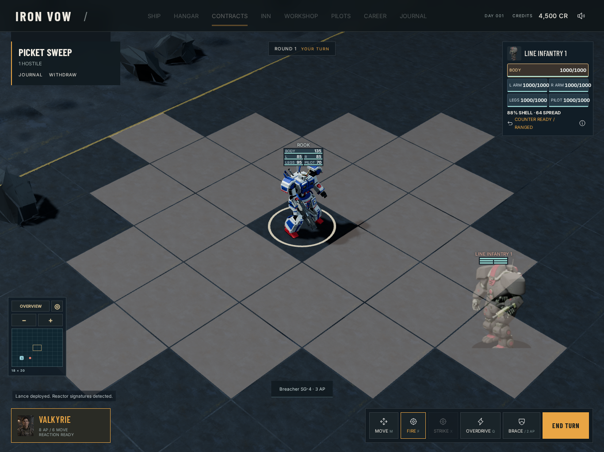
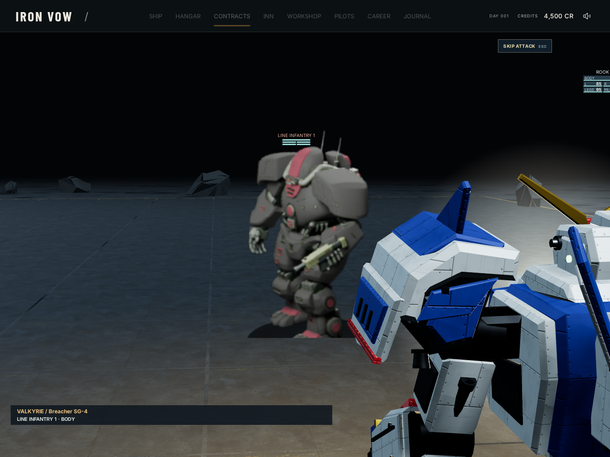
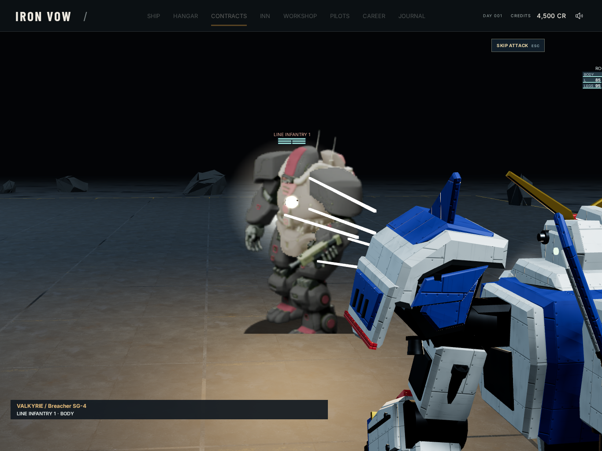
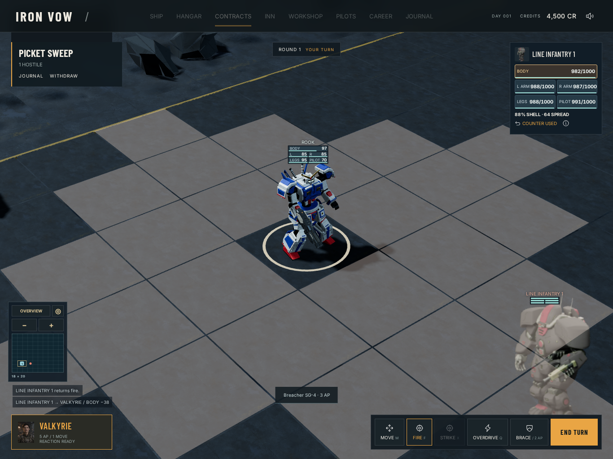
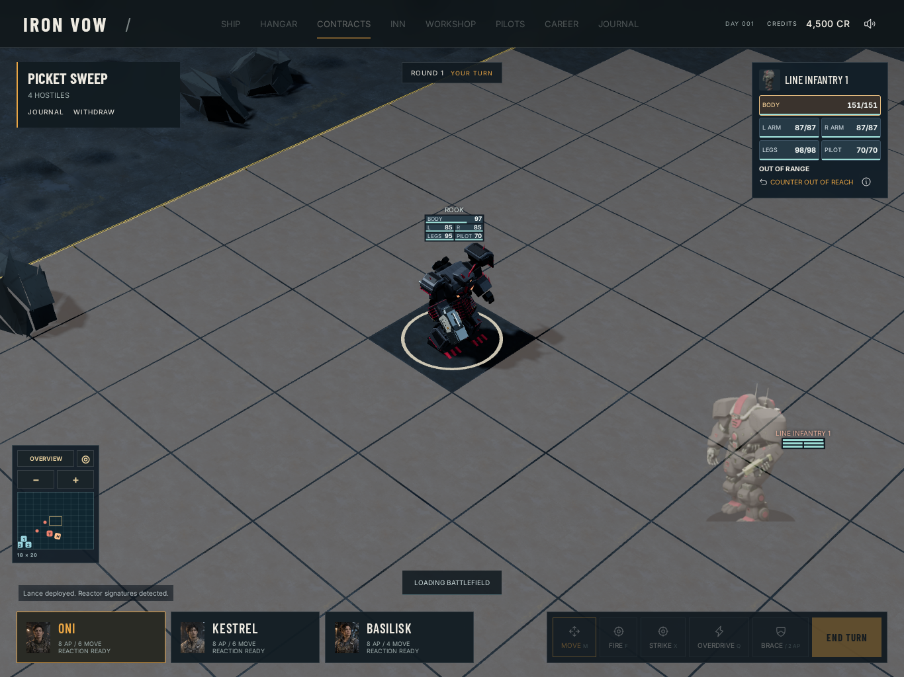
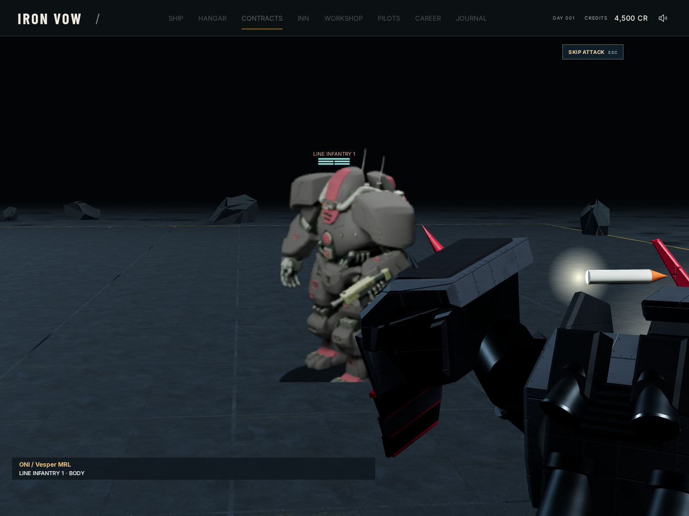
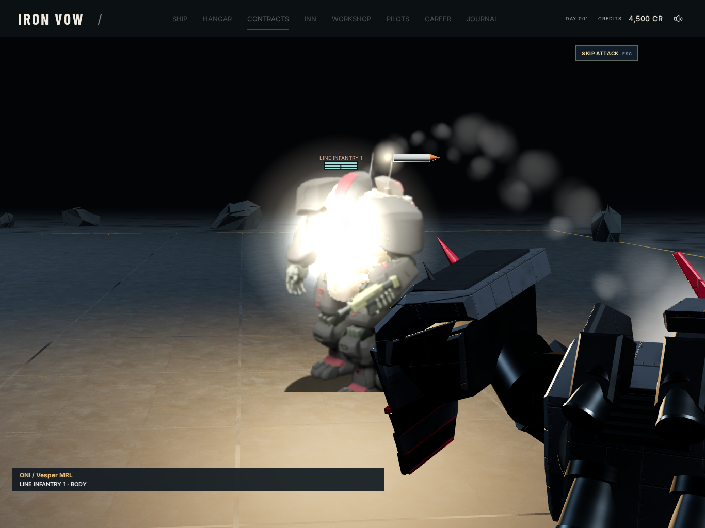
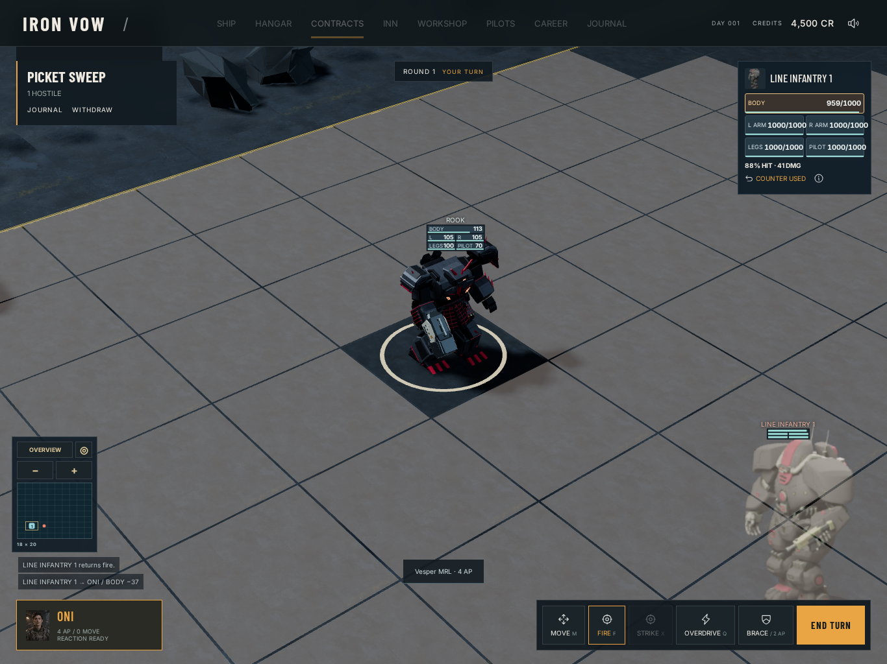